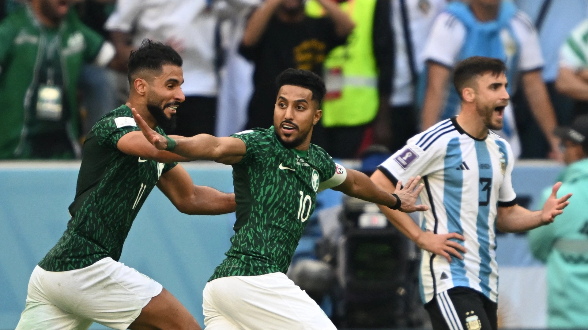

El estadio de Lusail, se ha convertido prácticamente en un talismán para el equipo dirigido por Scaloni. Desde la derrota contra Arabia Saudita en el primer partido de la competición, Argentina ha ganado los siguientes 4 partidos que ha jugado en el estadio más grande de la competición. Superó 2-0 a México en fase de grupos, a Países Bajos en los cuartos de final , a Croacia (3-0) en la semifinales, y a Francia en la FINAL. Y, en todos ellos, ha destacado el papel espectacular de su afición: siempre han sido mayoría. Ante Croacia, cerca de 40.000 aficionados albicelestes.
ARGENTINA EN EL MUNDIAL DE QATAR 22
La selección argentina de fútbol es uno de los equipos más destacados en la historia del fútbol mundial. Han ganado tres Copas del Mundo (en 1978, 1986 y 2022) y han llegado a la final en varias ocasiones más, incluyendo las ediciones de 1930, 1990 y 2014. Además, han ganado 15 veces la Copa América, lo que los convierte en el equipo más exitoso en la historia de este torneo.

Argentina sufrió una derrota impensada en su debut y se quedó sin margen de error en la Copa del Mundo
Por la primera fecha del Grupo C, la Albiceleste cayó 2-1 en su estreno en el Mundial Qatar 2022. Se puso al frente con el gol de Messi, de penal, pero en una ráfaga de cinco minutos al inicio de la segunda etapa, los tantos de Al-Shehri y Aldawsari le dieron el triunfo a los árabes. En el primer tiempo, la intervención del VAR le anuló dos goles.


Argentina vs Paises bajos
El camino y los rivales de Argentina hasta la final del Mundial de Qatar 2022. En un partido de infarto, Argentina se impuso 4 a 3 en penales contra Países Bajos y avanzó a la semifinal del Mundial de Qatar. Emiliano 'Dibu' Martínez y Lionel Messi fueron los héroes de la Selección de Argentina. En un partido cardíaco, la Albiceleste sufrió hasta la tanda de penaltis pero despachó a los Países Bajos por (3) 2-2 (4) para instalarse en las Semifinales del Mundial Qatar 2022 contra Croacia.
El calzado diseñado por la empresa Adidas se llaman "Leo Messi X Speedportal Leyenda". Son de color dorado y tiene detalles en negro, blanco y celeste. Los botines cuentan con dos inscripciones: "Anto", en referencia a su señora, y otro con la leyenda "Ciro, 10.03.18", en alusión a la fecha de nacimiento de su hijo más chico. El calzado, que tiene un sistema de estabilidad de alta velocidad y una jaula de agilidad

La Albiceleste superó al verdugo de Brasil.
Argentina goleó a Croacia por 3 a 0 en la semifinal del Mundial y se convirtió en el primer finalista en Qatar. Con una actuación estelar de Lionel Messi, que convirtió el primero de penal, y un doblete de Julián Álvarez. Argentina es una fiesta por cómo llega y por cómo se recuperó después de un duro debut ante Arabia Saudita. Las lágrimas de sus jugadores y su cuerpo técnico reflejan la ilusión por la final. Esa seriá sin dudas la revancha por el partido perdido con Alemania en Brasil 2014, en busca de la tercera Copa.
La Albiceleste de Lionel Messi consiguió la gloria máxima tras el triunfo por penales ante Francia en el Lusail Stadium, luego de igualar 3-3 en los 120 minutos. Jugó un enorme partido hasta el descuento de Mbappé y no mereció sufrir. El haberse impuesto en la mejor final de la historia no hizo más que inyectarle épica a una conquista trabajada, sufrida, pero cargada de mística... Y muy buen fútbol. Se trata de la tercera estrella para la Selección y la primera en el torneo para el astro rosarino que, a los 35 años, logró su gran sueño, como Maradona en 1986.